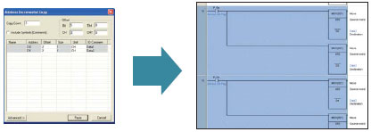
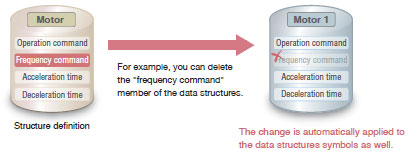
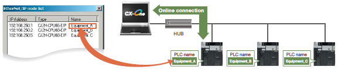
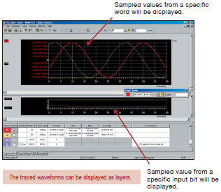

The CX-One is an integrated package of Support Software including setup applications for networks, PTs, Servo Drives, Inverters, and Temperature Controllers as well as programming software of PLCs.
Building Automation
Industrial Automation
Power Automation & Safety


Bangladesh Distributor
CXONE-AL[][]D-V4
FA Integrated Tool Package
The CX-One is a comprehensive software package that integrates PLC Programming Software with Support Software for setting up Networks, Programmable Terminals, Servo Systems, Inverters, and Temperature Controllers.
about this Product Family
Related Contents
- Automation Systems
- Software
- Features
- Lineup
- Specifications
- Dimensions
- Catalog
last update: May 16, 2016
Further Advanced Integrated Tool Package CX-One Version 4
ST programming for further easy and simple programing and configuration of PLC systems
CX-One Tools
Microsoft, Visual Basic, Visual C#, Visual Studio and Windows are either registered trademarks or trademarks of Microsoft Corporation in the United States and/or other countries.
Microsoft product screen shot(s) reprinted with permission from Microsoft Corporation.
EtherCAT® is registered trademark and patented technology, licensed by Beckhoff Automation GmbH, Germany.
DeviceNet™, DeviceNet™ Safety, CompoNet™, and EtherNet/IP™ are either registered trademarks or trademarks of ODVA.
Other company names and product names in this document are the trademarks or registered trademarks of their respective companies.
[Support for New Operating System]
Windows 10 is supported
In addition to Windows XP, Vista, and 7, Windows 8 , Windows 8.1, Windows 10 is now supported.
The CX-One runs on the Windows 10 desktop.
OS
Windows XP (Service Pack 3 or higher, 32-bit version)/ Windows Vista (32-bit/64-bit version)/ Windows 7 (32-bit/64-bit version)/ Windows 8 (32-bit/64-bit version)/ Windows 8.1 (32-bit/64-bit version)/ Windows 10 (32-bit/64-bit version)
CX-One Lite is available on DVD
The FA Integrated Tool Package CX-One Lite suitable for Compact PLCs is now available on one DVD instead of four CDs.
Resume Function for Automatic Update
The auto update function using OMRON Automation Upgrade Utility allows you to suspend and resume downloading the version upgrade program. When a download is arbitrarily interrupted or connecting to the server fails during a download, the download can be resumed from the point where it was suspended.
![CXONE-AL[][]D-V4 Features 8](../../../images/1605_fe_713-106380.jpg)
Input without Wasted Effort!
Use Mnemonics to Input Instructions Directly or Use 1-key Inputs
A Smart Input Function Greatly Reduces the Work Required to Input Programs
A new method is available that lets you input instructions directly using mnemonics.
Other functions include automatic addresses for operands, including input bits and output bits, automatic insertion of connecting lines for output and application instructions, and other smart input functions that greatly reduce the work required to input ladder diagrams.
* This function is supported only for ladder diagrams.
Instruction and Address Input Assistance
When you begin typing an instruction from the keyboard while in the Ladder Editor Window, suggested instructions are displayed.
All you have to do is select the instruction from the list for easy input even if you do not remember the entire mnemonic.
Automatic Insertion of Connecting Lines
When an output or application instruction is input, the required connecting line is inserted automatically starting at the cursor location.
This greatly simplifies the work required to insert lines.
Address Incremental Copy
To create the same group of ladder instructions more than once, the address incremental copy function can be used to reuse the instructions simply by inputting an address offset. Also, address offsets can be set individually and I/O comments can be created automatically.

Auxiliary Bit Input from Lists
Clock Pulse Flags, Condition Flags, and other special bits in the Auxiliary can be selected from lists, eliminating the need to remember addresses.
Address Incrementing
The address of the next operand, including input bits and output bits, is incremented by one and displayed as the default.
This enables easily inputting consecutive addresses.
Quick-key Input of Both Instruction and Operands, and Consecutive Input of Instructions
When an instruction is displayed with a default operand, just press the Shift + Enter Keys to confirm input of both the instruction and operand.
To input the same instruction consecutively, just press the Ctrl + Enter Keys.
We've eliminated the number of steps for key operations wherever possible.
Easily Program Numeric Calculations and Text String Operations with Structured Text
Structured Text for Simple and Easy-to-understand Programming
Structured Text (ST)
Numeric calculations, conditional branching, and text string processing, all of which can be difficult with ladder diagrams, can be easily programmed using ST.
- Calculating the Length and Angle from X,Y Coordinates Using Numeric Calculations and Conditional Branching
Input Assistance on ST Editor
When you type the first letter of a statement, function, or symbol on the ST Editor, the keyword list is displayed. You do not have to type it all out.
Function Guidance on ST Editor
By hovering your mouse over a function, the tool tip will display the function name, arguments, and return values.
This guidance will help you program without a manual.
Symbol Definition Assistance on ST Editor
If entering an undefined symbol, you will see a mark under the symbol.
You can add a new symbol from the dialog box even during programming.
Note. These functions are available in the CX-Programmer version 9.3 or higher.
Modular Function Blocks (FB) and Easy-to-read Structured Text (ST)
FB and ST Facilitate the Reuse of Program Designs
The multilingual feature supports IEC 61131-3. Programming is possible in a language that is appropriate for the process by combining ladder diagram and ST languages. Function blocks can be created to make programming even more efficient.
Support for Data Structures, Timer Data Type, and Counter Data Type
Newly Supported Data Types Make Reusing Program Designs Much Easier
Applicable Models: CJ2
Data Structures
A data structure is a user-defined data type that groups various data together. By grouping the data, large volumes of data handled by a program are made easier to understand and can be registered or changed much easier.
- Data can be easily reused as one entity.
If the same pattern is repeated in the data, you can define a data structure to enable easily reusing the data in programming.
- Data can be easily changed.
Even if there are changes to the data, the definition of the data structures can be modified to automatically change the data structures symbols in the symbol table as well.

Timer and Counter Data Types
The timer and counter data types can now be used in ST. This enables using timers in ST to perform wait processing.
- Example of Processing after a Specified Period of Time Elapses
Improved Functionality for Position Control
Preliminary Verification of Memory Operation for Position Control
Applicable Models: CJ1W-NC[][]4/NC[]81
Use Memory Operation Previews for Smoother Startup
Verifying operation before transferring the memory operation data to the Unit enables smoother startup and reduces the work involved in system verification.
Display Axis Movement Patterns for Two Interpolated Axes or for All Axes
You can verify movements by axis for each task. (Up to four axes can be displayed for each task.) Just click to switch the frame of reference for confirming operating patterns between one/two-axis interpolation, all axes, and pulse output instructions.
Position Control Unit and Communications Setup Integrated into the CX-Programmer
Easily Achieve Position Control without Wading Through User Manuals
Applicable Models: CJ1W-NC[]81
Setup the Position Control Units and Servo Drives from One Connection
Just connect the computer to a CPU Unit port to set up the Position Control Units with EtherCAT interface and EtherCAT communications.
You can also directly start the CX-Drive Support Software to set the Servo Drives connected to the Position Control Units.
Automatic Network Setup
The communications parameters for Position Control Units with EtherCAT interface can be set simply by selecting a menu command.
USB and EtherNet/IP Ports Are Available for CJ2 CPU Units
Easier Connection to PLCs
CX-Programmer
Applicable Models: CJ2
Easy Connection with USB
A standard USB cable can be easily connected to the USB port on the front of the CPU Unit.
Easy Connection with EtherNet/IP
Easy connection by specifying the computer LAN (Ethernet) port and IP address only.
* CJ2(built-in EtherNet/IP) CPU Units only.
Prevent Connection Errors by Verifying PLC Names
The CJ2 CPU Unit can record a PLC name. Errors in transfers can be prevented ahead of time because the PLC name can be compared with what is in the project file when connecting online.

Browse and Connect from the EtherNet/IP Connection List
Even if the IP address is unknown, you can browse a list of PLCs connected to the EtherNet/IP and select one to connect to it. With this, remote debugging and maintenance can be conducted smoothly on site.
* CJ2(built-in EtherNet/IP) CPU Units only.
Integration of Network Construction and Parameter Settings
Easy Setting of Tag Data Links for EtherNet/IP
In addition to creating data links with the EtherNet/IP Datalink Tool using I/O memory addresses, you can also use network symbols for tags to easily create the data links.
With EtherNet/IP, high-speed, high-volume data links can be created with different cycle specifications for each applications, regardless of the number of nodes.
* CJ2(built-in EtherNet/IP) CPU Units only.
EtherNet/IP Tag Data Link Setting Wizard
A wizard can be used to easily set the tag data links for Ethernet/IP by importing the network symbols for tags from the CX-Programmer.
(Network Configurator)
EtherNet/IP Datalink Tool
EtherNet/IP data links can be easily created by setting I/O memory addresses in data link tables.
(Network Configurator)
Monitors Nodes on Controller Link Network, Suggests Troubleshooting Measures, and Checks Errors in Settings
Total Diagnosis of a Controller Link Network
The Controller Link Network Diagnostic Tool can check the network status, node status, node settings, disconnections, and transmission status.
This tool can be started from the CX-Integrator.
Network Status Diagnosis
- The network status diagnosis results show the status of the specified Controller Link network (transmission path type, baud rate, communications cycle time, data link status (automatic/manual, active), polling node, and starting node) and the status of the nodes participating in the specified Controller Link network (participating in data links, errors, names, etc.).
Any differences between the nodes registered in the specified node file and the actual nodes will be displayed. - The operating status of the CPU Units and Controller Link Units/Boards is checked. Error information will be displayed if any errors occur.
Double-click the diagnostic message in the diagnostic results area to view the current error details, probable causes, and measures.
Node Settings Diagnosis
- The settings in the DM parameter area and other settings of all nodes participating in the specified network are read, and the integrity of the overall network is checked.
- The diagnosis results are displayed in three levels: Error, Warning, and Information.
Transmission Status Diagnosis
- The transmission status counters for all nodes participating in the specified network can be displayed.
Transmission status counter items: Number of CRC errors, number of token re-sends, number of token returns, number of token timeouts, number of polling timeouts, number of controller changes, number of active node changes
Error Log Collection
- The error status and error logs for all nodes on the specified network can be collected and stored in one file.
- This function enables sending files collected on remote systems as email attachments for later analysis.
Comprehensive Debugging for Networks
Time Required for Onsite Startup and Debugging Has Been Significantly Reduced
With CX-One version 3.0, debugging is efficient with simultaneously monitoring and management of multiple networks and PLCs.
Management of Multiple Networks
The operation of networks with configurations consisting of multiple networks including PLC networks such as EtherNet/IP™ and Controller Link, field networks such as DeviceNet™ and CompoNet™, and networks for Programmable Terminals and Serial Devices, can be restored simultaneously from the CX-One. Onsite start up and debugging can be conducted efficiently and without errors because PLCs and devices can be selected from the window to transfer programs and parameter data to the computer during operation.
Ladder Diagram Monitoring for Multiple PLCs
Multiple PLCs can be monitored by displaying them in series on the screen. This way it is easy to debug data links between PLCs and monitor the inputs and outputs of different PLCs.
Group Monitoring of Multiple PLC Input/Outputs in the Watch Window
The desired I/O data can be selected for multiple PLCs, such as input bits, output bits, and word I/O data, and monitored simultaneously. There are also functions such as the Binary Monitor and Forced Set/Reset functions that enables graphical monitoring the ON/OFF status of word data. All of these monitoring functions are easy to use.
Time Require for Debugging and Maintenance Has Been Reduced with the Comprehensive Data Trace Function
Functionality and operability has been significantly upgraded compared to the previous data trace function. The new data trace function provides comprehensive debugging, such as I/O comment display of sampled addresses, specification using symbols, checking the measurement time between two selected points, and layering waveforms. Furthermore, data sampled from the CPU Unit's trace memory can be saved to a file on the computer at a specified frequency. This can be used as for long-term logging of data.
Data Trace Function

Continuous Data Trace Logging
Applicable Models: CJ2
Simulation Debugging
Programs can be debugged using a computer without the actual PLC. A wide range of languages, such as ladder diagram, sequential function charts (SFC), structured text (ST), and programs within function blocks are supported. Furthermore, programs can be edited online, bits can be forceset/reset, breakpoints can be set, and a PLC error simulator can be used.
Simulation of SFC, Ladder Diagrams, and Function Blocks
No Size Restrictions for Online Editing of Function Blocks and Sequential Function Charts
Applicable Models: CJ2
There are no size restrictions for the function blocks and SFC that can be edited online.
View and Change Values of PLC I/O Memory with Comments
The SwitchBox Utility helps you debug PLCs by allowing you to monitor and change values of I/O memory in CPU Units.
This utility software displays values of I/O memory (words and bits) with comments on a PC.
Function keys can be used to set/reset bits, force-set/force-reset bits, select a monitored group, and work the CX-Simulator.
- Bits and words to monitor can be registered as an address group. You can easily change the addresses to monitor by selecting a registered address group. Up to 100 address groups can be registered.
- The SwitchBox Utility can import addresses with I/O comments from the memory card mounted to the PLC, global symbol table of the CX-Programmer, tab-delimited text file, or clipboard.
It can also export addresses with I/O comments to a tab-delimited text file or clipboard.
PLC Backup Tool Batch Backup
Batch Backup/Restore with a Computer
A computer can be used to backup, compare, or restore data for all or specific PLC Units when connected online. Backup information is automatically tagged with a date stamp. It is thus possible to return to the state before an error occurred. It is also easy to identify the file for restoring data when an error occurs.
Easy Online Connection
With the improved automatic online connection function, all you need to do is select the PLC series to connect.
There is no need to set the PLC model and protocol, greatly reducing setting time.
Products Are Highly Compatible and Easy to Use Because They Are from a Comprehensive PLC Manufacturer
The CX-Designer Simplifies the Processes from Screen Design to Debugging for the NS-series Programmable Terminals
Applicable Models: NS Series, NSJ Series
The time required for designing can be significantly reduced because of the compatibility with CJ-series PLCs. The process of designing screens is easier with expanded function.
Integrated Simulation with the PLC Ladder Diagrams
Test functions for the CX-Designer and CX-Programmer are linked through the CX-Simulator on a computer. This enables screens and ladder diagrams to be checked simultaneously, significantly improving the debugging efficiency. A new Integrated Simulation Button has been added to the CX-Programmer.
Furthermore, work efficiency has been significantly improved with the function that enables work windows to be pinned in front, and a flexible zoom function.
Screens and Ladder Diagrams Can Be Simultaneously Checked on a Computer
Using CJ2 Data Structures Can Improve System Design Efficiency
Special function which can be used for a system with Omron PLC CJ2 and NS-series programmable terminal.
Just drag the data structures on the CX-Programmer and drop it on the CX-Designer.
Data structures can be shared between the PLC ladder program and screen editor of programmable terminal.
Note 1: To use CJ2 data structure, prepare CX-Designer Ver.3.2 or higher and NS system program Ver.8.4 or higher.
Note 2: This function can be used when the PLC and programmable terminal are connected via EtherNet/IP.
Communications Components and the Smart Active Parts (SAP) Library Significantly Reduces the Time Required to Create Ladder Diagrams and Screens
There are over 3,000 Smart Active Parts that can directly access OMRON PLCs and components. Simply select and paste a part from the SAP library onto the screen. Detailed screens and ladder diagrams do not need to be created.
Using Software Components, Error Checking and Parameter Setting Can Be Done without a Computer
There are many software components in the Software Function SAP Library that can be easily incorporated into the NS-series Programmable Terminals.
Simply select and paste software components on the screen. Device errors can be checked and parameters set without a computer.
The Troubleshooter SAPs Can Be Used Onsite without Computers or Manuals
There is a troubleshooter SAP library that covers all PLC Units. If there is a PLC error, the troubleshooter SAP library explains the cause and how to implement countermeasures in a way that it is easy to understand.
![CXONE-AL[][]D-V4 Features 79](../../../images/1605_fe_4713-106462.jpg)
Improved Troubleshooter SAP Library
In addition to the DeviceNet Units and Position Control Units, the CX-Designer also includes Basic I/O Unit, Analog I/O Units, Serial Communications Units, High-speed Counter Units, Controller Link Unit, and ID Sensor Units. Including the EtherNet Units and Motion Control Units is planned in future development stages.
Easily Built Intelligent Motion Control
Optimum Motion System Support for Applications with Motion Networks or Generic Interfaces
Support from system starting to Maintenance. Also Provides EtherCAT Compatibility CX-Drive
![CXONE-AL[][]D-V4 Features 83](../../../images/1605_fe_5113-106468.jpg)
Quickly adjust the gain using a wizard.
The autotuning feature provided with the CX-Drive makes it easy to adjust the Servo Drive gain.
You can use a wizard to complete gain adjustment in approximately five minutes or less per axis simply by selecting the machine configuration and entering the target set time.
Applicable Models:
Servo: G5/G/W Series, SMARTSTEP 2/SMARTSTEP Junior/SMARTSTEP A Series *
Inverter: MX2/MX2-V1/RX/RX-V1/JX/MX Series, 3G3JV/3G3MV/3G3RV/3G3RV-V1
* Discontinuation models in March 2013.
Easy Management of Parameters While Connected to PLCs CX-Motion-NCF
Position Control Units with MECHATROLINK-II interface
Applicable Models: CS1W/CJ1W-NCF71/NC271/NC471
Even Easier to Start Up a System CX-Motion-MCH
From Parameter Settings to Temperature Data Management
The CX-Thermo/CX-Process Tool Software Supports High-level Temperature Control
Setting Temperature Controller Parameters Is Easier CX-Thermo
Parameters can be easily set from a list
Easy Parameter Settings
Parameters can be set even for Temperature Controllers that do not support communications.
Parameters can be saved, and then copied, or reused and edited (Parameters can be exported in CSV or HTML format.)
Displays Only What Is Used
To avoid unintentional use of parameters, unused parameters can be masked (i.e., hidden)
Applicable Units:
E5CC/E5EC/E5AC/E5DC/E5GN/E5CN/E5CN-H/E5CN-HT/E5EN/E5EN-H/E5EN-HT/E5AN/E5AN-H/E5AN-HT/E5ER/
E5ER-T/E5AR/E5AR-T/EJ1/E5ZN
* The DeviceNet type is excluded
E5CC/E5EC/E5AC/E5DC/E5GN/E5CN/E5CN-H/E5CN-HT/E5EN/E5EN-H/E5EN-HT/E5AN/E5AN-H/E5AN-HT/E5ER/
E5ER-T/E5AR/E5AR-T/EJ1/E5ZN
* The DeviceNet type is excluded
Programming for the Process Controller Is Easier CX-Process Tool
Control Programs Can Be Constructed By Pasting Function Blocks
Control Can Be Customized
Control programs can be constructed by pasting function blocks and connecting them. They can be used for simple PID control, program control, and cascade control.
Easy Creation of an HMI
Screens for the NS-series PTs (NS runtime screen) are automatically generated from the function block programs. Standard control screens and tuning screens do not need to be created manually.
Applicable Units:
CJ1G-CPU4[]P/CPU4[]P-GTC, CS1W-LCB01/LCB05/LCB05-GTC, CS1W-LC001 *, CS1D-CPU6[]P
* Discontinuation models in March 2012.
CJ1G-CPU4[]P/CPU4[]P-GTC, CS1W-LCB01/LCB05/LCB05-GTC, CS1W-LC001 *, CS1D-CPU6[]P
* Discontinuation models in March 2012.
CX-Thermo/CX-Process Tool Support Software
Adjusting Parameters While Monitoring Trends
PID parameters can be adjusted while monitoring the present value (PV), setting point (SP), and manipulated variable (MV). Trend data can be saved in CSV format.
(CX-Thermo Trend Viewer, CX-Process Tool Support Software Tuning Screen)
Controlling with a Reliable Control Algorithm (See note.)
The execution of the autotuning (AT) function that calculates the PID constants and the fine tuning (FT) function that improves controllability exactly as required are made easy with an intuitive user interface. The interference overshooting adjustment function is supported to adjust overshooting when interference occurs, and the gradient temperature control function achieves constant internal temperatures for multi-point temperature control with interference.
Note: Supported functions depends on the product being used. Refer to product manuals for details.
Note: CX-One Version 4.[] does not include CX-Compolet and SYSMAC Gateway.
Easily Write Programs to Read and Write PLC Data with VB or C#.
CX-Compolet
Easy to Use without Any Technical Knowledge
- Provides software components that help you easily and quickly develop PLC communications.
- Read and write PLC data without the need to consider differences between networks.
- Supports Microsoft Visual Studio 2015.
- For the CJ2 with EtherNet/IP functionality, I/O memory in the PLC can be accessed by using tag names rather than addresses.
- Array and structure variable access is possible.
Communications Middleware to Connect a Computer and PLCs
SYSMAC Gateway
Direct Connection of the Industrial Ethernet: EtherNet/IP
Direct Access to High-speed and High-capacity Networks
- In addition to FINS communications, SYSMAC Gateway supports EtherNet/IP communications.
- Absorbs differences in the physical layer between RS-232C, USB, Ethernet, EtherNet/IP, and Controller Link.
- Just install the software on the computer to enable data communications for controls and information.
Web Support Services for CX-One
OMRON'S CX-One offers many service options in the Internet environment so that engineers and online support is available from anywhere in the world 24 hours a day.
Online User Registration
When you register online as a user of CX-One, all CX-One software components can be registered at once. The online registration website can be accessed from Japan, North America, South America, Central America, Europe, Africa, Asia, China, Taiwan, and Korea. You can access the Internet services from anywhere once you have registered.
Automatic Update
With the automatic update function of CX-One, the latest update information for your computer environment can be searched for and applied using the network environment. Your CX-One can be constantly updated to the latest state. It is also possible to update only the necessary tools.
Download Services
Control devices that were made available after you purchased the Support Software can be used if you download the latest Smart Libraries from the Internet. A customized library can be made by downloading the Smart FB Library and Smart Active Parts for the hardware that you require. Programming is also easy by selecting and pasting the necessary parts.
last update: May 16, 2016